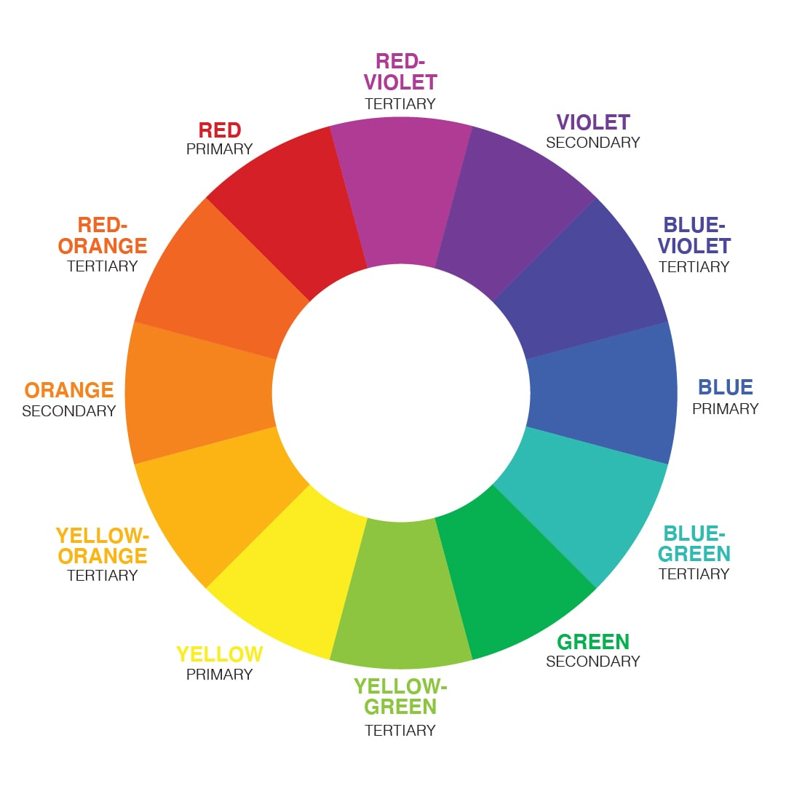

CSS Colors Harmony
Les harmonies de couleurs sont des combinaisons particulièrement agréables de deux couleurs ou plus, dérivées de leur relation sur une roue chromatique. Également connues sous le nom d'accords de couleurs, les harmonies de couleurs sont utiles lors de l'exploration d'une palette de couleurs possible ou peuvent être utilisées comme un schéma de couleurs autonome.

Couleurs complémentaires
Les couleurs qui sont directement opposées sur la roue chromatique sont appelées couleurs complémentaires.
Les couleurs complémentaires ont un contraste élevé et peuvent être très efficaces comme couleurs d'accent lorsqu'elles sont associées à une palette plus neutre.
Entrez une couleur de votre choix parmis les couleurs présentées pour trouver sa complémentaire
Couleurs triadiques
Les harmonies triadiques consistent en trois couleurs équidistantes les unes des autres sur la roue chromatique.
Comme les couleurs complémentaires, les schémas triadiques ont tendance à être très lumineux avec un contraste élevé et fonctionnent mieux lorsqu'une couleur domine.
Entrez une couleur de votre choix parmis les couleurs présentées pour trouver ses triadiques